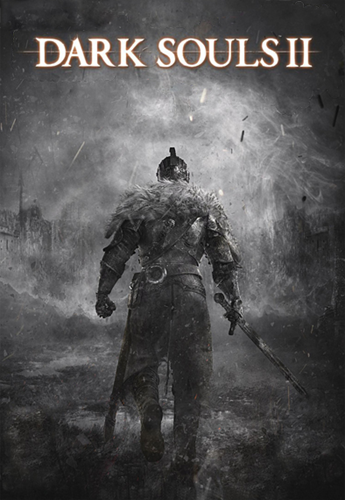
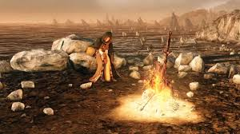
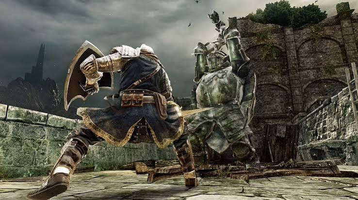

DARK SOULS II

Dark Souls II (ダークソウルII, Dāku Sōru Tsū) é um jogo eletrônico do género RPG de ação produzido pela empresa japonesa FromSoftware e publicado primeiro no Japão. Depois de alguns adiamentos, foi lançado internacionalmente pela Bandai Namco Games entre março e abril de 2014 para Microsoft Windows, PlayStation 3 e Xbox 360. Dark Souls II foi lançado após alguns atrasos iniciais, e é o segundo título da série Dark Souls. Passando-se no reino de Drangleic, o jogo segue um personagem morto-vivo amaldiçoado em busca de uma cura para sua aflição.
Jogabilidade

Dark Souls II é uma entrada na série Dark Souls, conhecida por sua dificuldade, já que tanto chefes quanto inimigos comuns têm o potencial de derrotar o jogador em apenas alguns golpes. Jogadas ruins são punidas severamente pela maioria dos inimigos, e as oportunidades de recuperação de saúde são limitadas. Além disso, a cada morte, a saúde máxima do jogador é reduzida. Esse processo, chamado de hollowing, pode continuar até que a barra de HP atinja um limite inferior definido de 50%. A barra de HP completa do jogador só é recuperada quando ele gasta um item raro. O jogo usa uma forma de moeda conjunta chamada "almas", que são usadas como pontos de experiência para subir de nível e também como moeda para comprar itens em lojas. Após a morte, toda a coleção de almas do jogador é descartada; o jogador pode recuperar suas almas descartadas retornando ao local onde morreu, mas se morrer antes de pegá-las, as almas serão perdidas permanentemente.
Desenvolvimento
Dark Souls II foi anunciado durante os Spike Video Game Awards em dezembro de 2012. Hidetaka Miyazaki, que foi diretor dos dois jogos anteriores da série, Demon's Souls e Dark Souls, serviu como supervisor, enquanto que a direção ficou a cargo de Tomohiro Shibuya e Yui Tanimura. O jogo se passa dentro do mundo fictício de Drangleic, existindo menções e complementos ao enredo do jogo anterior, Dark Souls. O jogo usa servidores dedicados para o multijogador, e usa dois modos: jogador vs. ambiente (PvE) e jogador vs. jogador (PvP), para além de ter componentes cooperativos. Tal como em jogos anteriores da série, Dark Souls II tem uma jogabilidade desafiadora, mas com gráficos mais poderosos e um sistema de inteligência artificial mais avançado.
Recepção
De acordo com o site de análises agregadas Metacritic, Dark Souls II recebeu “aclamação universal” por parte da critica especializada, conseguindo a pontuação de 91/100 em todas as versões.

https://pt.wikipedia.org/wiki/Dark_Souls_II